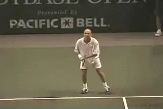
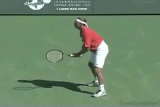
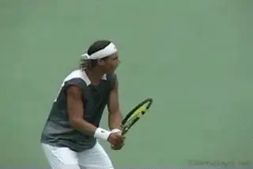
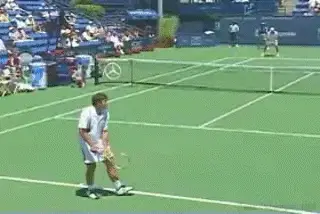
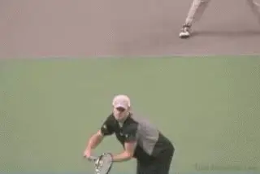
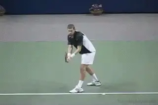
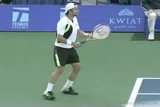
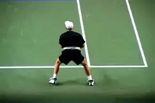
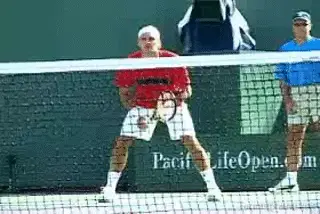

The Return Mentality¶
Nick Bollettieri¶

The return of serve begins with attitude.
The return of service begins with mental attitude. When you're facing an opponent who's launching a full scale assault with his serve, you have the choice to either run for cover, or hang in there and send those returns right back to the server.
It takes more than just quick reflexes to break a serving offensive. You need the right mind set. You need belief. You need powers of observation, intuition, and anticipation. You also need to understand the fundamentals of return technique. Finally, you need a game plan, and the discipline to execute your plan.
In this article we'll start with the mind set. In the articles that follow we'll take about technique and game plans.

You can't over emphasize the importance of making the server play.
Mental Attitude
I said the return of service begins with mental attitude. There are two levels to this.
The first level is to believe this: I will get the ball back in play. A return starts the point and makes your opponent play. That may seem obvious, but you cannot over emphasize the importance of making the server play. Many players at all levels ignore this and never reach their potential. Those that believe know the difference it makes. The difference between winning and losing.
There is a second level in the mental attitude of the great returners. Once you learn how to get back the return in play, the second level is: I want to challenge the server. Don't fear the server, challenge him! On a critical point you can't pray for a double fault. Instead you want the serve to be in. You want the opportunity to hit a great return. That's the mindset you need.
This mindset is the secret for returning even the most difficult serves. Convince yourself that you love this challenge! This attitude underlies the sensational returns we see at critical moments in the pro matches. It's the attitude of players like Andre Agassi and Roger Federer.

At the pro level, a little more than half second between serve and return.
Anticipation
The best returners understand that most returns are won and lost before the ball is even in play. From the moment you step on the court, you should feel that you're on the hunt, you are stalking your prey, looking for any signs of weakness, moments of vulnerability. These will give you the opportunity to strike and to break. On every point, you must build your focus and your intensity prior to ever striking the return.
To be a great returner, you must understand how to gain as much control as possible in the situation. The first way to create control is through anticipation. You have a little more than half second to read, react and execute the return at the pro level. You must learn the indicators that can help you detect the server's intent. As you develop this, your power of intuition will allow you to anticipate the action before it happens.
To develop your anticipation skills and be able to execute the return, you must study how the server thinks. [[You do this by zeroing in on] [the server's patterns of play. Like a super computer, great returners log the data of previous points played, looking for any trends or tendencies that may help them anticipate what the server will do.]]

How accurate to all areas of the box?
You should begin by observing the strengths and weaknesses of the server, as well as his patterns of attack. Within the first few serve games, you will likely see everything the server has in their arsenal and the level of strategy he can employ.
-
[Can he vary speed and spins?]
-
[Can he serve to all areas of the box with equal accuracy?]
-
[Where does he go when the score is even?]
-
[Does this change when he is behind?]
-
[Is there a predictable pattern to the types and locations of his first/and or second serves?]
An intuitive returner can determine the server's preferred placements under pressure, as well as the placements that are more difficult for him to make.
Once you gather the necessary information you need, it gives you a [much better picture of what to expect in tight situations]. This will give you the chances you need to break as the match evolves.
Rotations
So the key to anticipation is to recognize the server's patterns. And almost all servers have them. Usually they are not difficult to recognize. Recognizing them is mainly a matter of awareness and discipline. Again this is where the majority of players fall short.

Is there a pattern to the server's placement rotation?
The server's pattern can be as simple as a relentless attack to your weakness, for example hitting every serve to your backhand side. But if you have no major weakness to attack, the server may step up to a higher level of strategy. He will do this using a rotation of serve placements.
[There are two kinds of rotations.] These are either a constant rotation or a setup rotation.
-
[A constant rotation means varying the placements, speeds and spins as randomly as possible.]
-
[A setup rotation means working one primary target more often to setup better opportunities to attack the other targets.]
Here is an example of a set up rotation. The server might attack your backhand side three or four points in a row. This may create an expectation on your part of where the next serve is coming. It may also force you to adjust your court position to better cover the backhand side. This is the point where the server will attack your forehand side, taking advantage of the opening you've created for him.

Constant rotation: spin, speed, and placement variation.
But against a returner with no major weaknesses and great court coverage abilities, a set up rotation may still not be enough to get the upper hand. Often the returner can zone in on the timing of the serve. This happens if every first serve is hit consistently hard and flat. Or if every second serve spins the same way. These things make the timing on the return much easier to anticipate.
The server must now rely on something more than just placement. This is a constant rotation. He must fluctuate the speed of the serves and the types and amounts of spin to throw off the returner's timing. In addition to working the various placement patterns, the server will strive to create different speed/spin combinations on these placements on both first and second serves.
When the server senses the returner is prepared and ready for the big sonic boom serve, that's when an off-speed spinner will be most effective. Just as in baseball, when the pitcher thinks the batter is looking for the fast ball, that's the last pitch he'll throw. Like the best pitchers, the best servers try to keep the returner guessing and off balance by being unpredictable and rarely delivering the exact serve the returner expects.

Be patient and establish your return rhythm.
Establishing Rhythm
What does this all mean from the returners point of view? It means the better the server, the more patient you must be in establishing your return and creating chances to break.
In the beginning, give yourself time to adjust to what the server actually can do. Don't rush, take your time, and establish a feeling for your return against all his options. [[The more variety he has, the longer it may take to develop a rhythm.] [But developing a return rhythm is the goal, more than trying to gain an immediate break.]] If that early break comes, great. But if you aren't able to break serve early in the match, you cannot allow yourself to become frustrated.
You have to respect the good servers and give them credit. Remember, if you can successfully hold your serve each time, all you need is one break of serve to win the set.

Challenge the server with rhythm, timing, and court position.
Power
[The serve is often a player's biggest offensive weapon.] You can use the power of the serve to make your return into your biggest defensive weapon. Think of the serve as the power supply for your return. This is especially true on first serve. All the power you need for your return will be supplied by the speed of the serve.
Remember the first goal on the return of serve is to get the point started, even when defending against big servers. Your objective should not be to add more power on your return, instead your objective is to neutralize and control the power of the incoming serve and re-direct the ball back into the court.
This is why you are seeing see the re-emergence of the slice return in the pro game. [Roger Federer uses the slice to float the return deep and neutralize the serves] of players like Andy Roddick who serve bombs but play from behind the baseline.

The slice return neutralizes big servers who stay back.
If you consistently try to add power, you end up going for too many winners when the opportunity isn't really there. The result is too many errors getting a point started. By getting the ball back in play you are forcing a good server to play. You are taking away his biggest weapon and forcing him to beat you with the rest of his game.
[[Challenging the server more aggressively isn't really a matter of power either]. It's more a question of [court position, timing, and anticipation]]. When Agassi steps in, takes the ball on the rise and hits a return winner he is using the same principle as when Roger slices the floating return. [[He is using the server's power]. It is his ability [to time the ball] and [hit in rhythm] that creates his incredible returns.]
Your opponent may have a much better serve than you but take this away from him and the balance of the match can swing dramatically in your favor. Too many players are intimidated by big servers. But against a smart returner, having a big serve is never enough to win the match. Your goal is to take the serve out of the equation. Go out on the court with that mentality. I can tell you it makes all the difference.
So now we've seen how the right mentality is a critical prerequisite for your return. Next let's look at return technique, and then, return game plans. Stay tuned.

Nick Bollettieri is the legendary coach who invented the concept of the tennis academy more than 30 years ago. He has trained thousands of elite players, including some of the greatest champions in the history of the game, players like Andre Agassi, Tommy Haas, Jim Courier, Monica Seles, Maria Sharapova, and Boris Becker. IMG Bollettieri Academies are located in Bradenton, Florida.